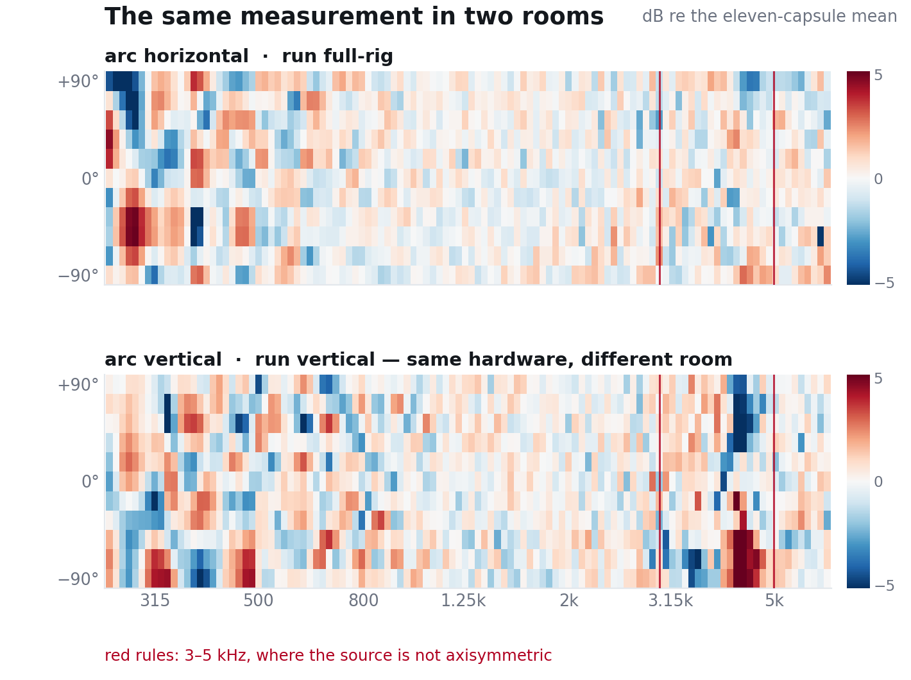

Eleven UMIK-2 capsules on a 1.68 m arc · what is the instrument, what is the room, and what the source can be trusted for · rev 1, 2026-09-17 · every number recomputed from our own captures
Four ideas, each one a difference that cancels what we cannot model.
cal.gain_db, spread across the
eleven 4.01 → 0.02 dB.| Quantity | Value |
|---|---|
| Run-to-run repeatability, nothing touched | 0.026 dB |
| Worst single cell, same | 0.20 dB |
| Position spread, arc horizontal | 3.86 dB |
| Position spread, arc vertical | 4.76 dB |
| Provably the rig (antisymmetric under the flip) | 0.21 dB |
| Provably the room (antisymmetric, un-flipped) | 1.04 dB |
| Shared symmetric term, undividable by one flip | 0.84 dB |
| …resolved by the vertical session: common part | ≤ 0.16 dB |
The reorientation is what settles it. A term that travels with the arc must appear in both geometries; the horizontal and vertical symmetric parts share cov = −0.09 dB², 95 % CI [−0.22, +0.03] by frequency-block bootstrap — consistent with zero. So the shared 0.84 dB is the room, and only ~0.2 dB of the position map is arc hardware.

The method needs one property of the loudspeaker: that its radiation be rotationally symmetric about its aim — every capsule sits at 90° to that axis. It need not be omnidirectional. Rolling such a source about its own axis is a no-op by construction, which makes the roll a clean test.
Rotating the whole sphere gave a false answer: putting it back at the same roll reproduced only to 1.32 dB, so handling the enclosure costs ~1.3 dB on its own — 56 % of the effect being claimed. The honest test is to move the part under test: unbolt the driver and remount it 180° inside a sphere that never moves.
| Driver turned 180°, enclosure fixed | Change |
|---|---|
| 257 Hz – 3 kHz (86 tones, worst 0.58) | 0.20 dB |
| 3–4 kHz | 1.18 dB |
| 4–5 kHz | 5.12 dB |
| 4362 Hz alone (ka = 2.39) | 11.0 dB |
| 5–6.35 kHz | 0.71 dB |
At 4362 Hz the arc pattern does not shift or scramble — it turns over (−90°: +3.8 → −13.0 dB;
+90°: −9.3 → +8.0; r = −0.63). A 180° rotation inverting the pattern is an m = 1 rocking mode:
the cone pivoting about a diameter instead of pistoning, its axis bolted to the driver. It is the cone,
so a different enclosure would not help. Enforced in code as
calibrator.rig.SOURCE_SUSPECT_HZ.
00000;
capsule-to-position was confirmed by reading labels, and a remount can mirror the map without
changing a cable — handled by labels_mirrored in each run's meta.json.
Data and code. Sessions in calibrator/sessions/2026-09-16 (capsules) and 2026-09-17 (arc); levels and meta mirrored to the measurement repo, WAVs local. calibrator/rig.py captures and read_map() is the single loader, so a figure cannot disagree with the capture about what a level means. This page replaces the arc-validation one-pager, remedies report and guide, retired 2026-09-17 because they framed the loudspeaker session as the work that "will decide" — it has been run. Where this page and CLAUDE.md disagree, CLAUDE.md governs.